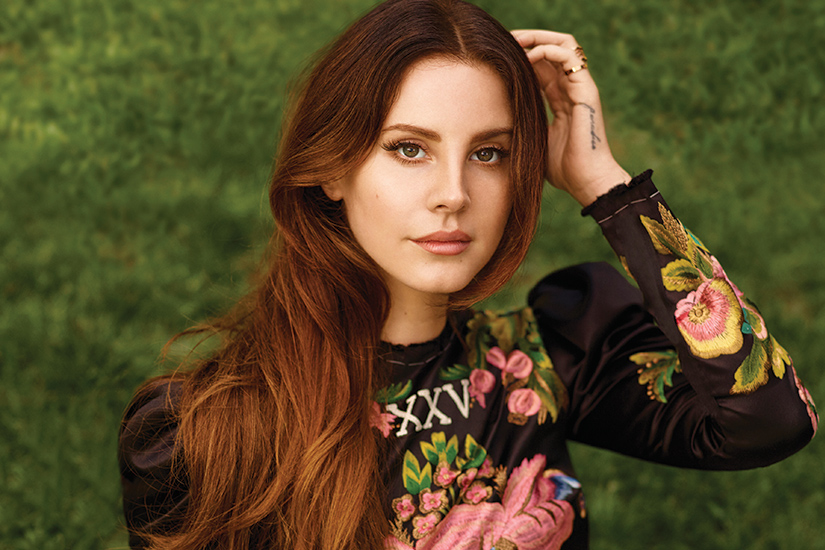

Born 1985
"I believe nothing happens by mistake. You know, the universe has a divine plan. That sounds dramatic."
Lana Del Rey, born Elizabeth Woolridge Grant, is an American singer, songwriter, and record producer. Her music is noted for its stylized cinematic quality; its themes of tragic romance, glamour, and melancholia; and its references to contemporary pop culture and 1950s–1960s Americana. She has received various awards, including two Brit Awards, two MTV Europe Music Awards, and a Satellite Award, and has been nominated for six Grammy Awards and a Golden Globe Award.